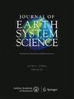

Recognized as:
3801 Couperin (501-75-104)
MINES ParisTech (402-38-768)
Welcome!
To use the personalized features of this site, please log in or register.
If you have forgotten your username or password, we can help.
|
|  |
Skills of different mesoscale models over Indian region during monsoon season: Forecast errors
| |
|
Skills of different mesoscale models over Indian region during monsoon season: Forecast errors
Someshwar Das1, 2  , Raghavendra Ashrit1, Gopal Raman Iyengar1, Saji Mohandas1, M. Das Gupta1, John P. George1, E. N. Rajagopal1 and Surya Kanti Dutta1 , Raghavendra Ashrit1, Gopal Raman Iyengar1, Saji Mohandas1, M. Das Gupta1, John P. George1, E. N. Rajagopal1 and Surya Kanti Dutta1
| (1) |
National Center for Medium Range Weather Forecasting, Noida, India |
| (2) |
Present address: SAARC Meteorological Research Centre, Dhaka, Bangladesh |
Received: 29 October 2007 Revised: 24 April 2008 Accepted: 28 May 2008 Published online: 23 December 2008
Abstract Performance of four mesoscale models namely, the MM5, ETA, RSM and WRF, run at NCMRWF for short range weather forecasting
has been examined during monsoon-2006. Evaluation is carried out based upon comparisons between observations and day-1 and
day-3 forecasts of wind, temperature, specific humidity, geopotential height, rainfall, systematic errors, root mean square
errors and specific events like the monsoon depressions.
It is very difficult to address the question of which model performs best over the Indian region? An honest answer is ‘none’.
Perhaps an ensemble approach would be the best. However, if we must make a final verdict, it can be stated that in general,
(i) the WRF is able to produce best All India rainfall prediction compared to observations in the day-1 forecast and, the
MM5 is able to produce best All India rainfall forecasts in day-3, but ETA and RSM are able to depict the best distribution
of rainfall maxima along the west coast of India, (ii) the MM5 is able to produce least RMSE of wind and geopotential fields
at most of the time, and (iii) the RSM is able to produce least errors in the day-1 forecasts of the tracks, while the ETA
model produces least errors in the day-3 forecasts.
Keywords Mesoscale - modeling - monsoon - forecast - errors - atmospheric sciences - meteorology

References
Abhilash S, Someshwar Das, Mohankumar K, Kalsi S R, Das Gupta M, John P George, Banerjee S K, Thampi S B and Pradhan D 2007:
Assimilation of Doppler Weather Radar observations in a Mesoscale model for the Prediction of Intense Rainfall Events Associated
with Mesoscale Convective Systems using 3DVAR; J. Earth Syst. Sci.
116(3) 275–304.
|
| |
Black T L 1994 The new NMC mesoscale eta model: Description and forecast examples; Wea. Forecasting
9 265–278.

|
| |
| Bohra A K, Basu S, Rajagopal E N, Iyengar G R, Das Gupta M, Ashrit R and Athiyaman B 2006 Heavy rainfall episode over Mumbai
on 26th July 2005: Assessment of NWP guidance; Curr. Sci.
90(9) 1188–1194.
|
| |
Colle B A, Westrick K J and Mass C F 1999 Evaluation of MM5 and Eta-10 precipitation forecasts over the Pacific Northwest
during the cold season; Wea. Forecasting
14 137–154.
|
| |
| Das Someshwar 2002a Real time mesoscale weather forecasting over Indian region using MM5 modeling system; NCMRWF Research Report No. NMRF/RR/3/2002 77.
|
| |
| Das Someshwar 2002b Evaluation and verification of MM5 forecasts over Indian region; 12th PSU/NCAR mesoscale model users workshop, 24–25 June, 2002, Boulder, CO, USA 77–81.
|
| |
Das Someshwar, Singh S V, Rajagopal E N and Gall R 2003 Mesoscale modeling for mountain weather forecasting over the Himalayas;
Bull. Amer. Meteor. Soc.
84(9) 1237–1244.
|
| |
| Das Someshwar 2005 Mountain weather forecasting using MM5 modeling system; Curr. Sci.
88(6) 899–905.
|
| |
| Das Someshwar, Ashrit R, Mohandas S, Iyengar G R, Das Gupta M, George J P, Rajagopal E N and Dutta S K 2007 Performance of
Mesoscale Models over India during Monsoon season; NCMRWF Research Report, 144 pp.
|
| |
| Davis C, Warner T, Astling E and Bowers J 1999 Development and application of an operational, relocatable, mesogamma-scale
weather analysis and forecasting system; Tellus
51A 710–727.
|
| |
Davis C and Carr F 2000 Summary of the 1998Workshop on Mesoscale Model Verification; Bull. Amer. Meteor. Soc.
81 809–819.
|
| |
| Doswell C A III, Davies-Jones R and Keller D L 1990 On summary measures of skill in rare event forecasting based on contingency
tables; Mon. Wea. Rev.
118 576–585.
|
| |
Dudhia J 1993 A non-hydrostatic version of the Penn State/NCAR mesoscale model: Validation tests and simulation of an Atlantic
cyclone and cold front; Mon. Wea. Rev.
121 1493–1513.
|
| |
| Ferranti L, Klinker E, Hollingsworth A and Hoskins B J 2000 Diagnosis of systematic forecast errors dependent on flow pattern;
WCRP/WGNE Workshop on systematic errors, 16–20 October, 2000, BMRC, Australia, pp 57–60.
|
| |
| Grell G A, Dudhia J and Stauffer D R 1994 A description of the 5th generation Penn State/NCAR Mesoscale model (MM5); NCAR tech. note, NCAR/TN-398+STR, 117 pp.
|
| |
Grimit E P and Mass C F 2002 Initial results of a mesoscale short-range ensemble forecasting system over the Pacific Northwest;
Wea. Forecasting
17 192–205.
|
| |
Juang H-M H and Kanamitsu M 1994 The NMC nested regional spectral model; Mon. Wea. Rev.
122 3–26.
|
| |
Juang H-M H, Hong S-Y and Kanamitsu M 1997 The NCEP regional spectral model: an update; Bull. Amer. Meteor. Soc.
78 2125–2143.
|
| |
| Kuo Y-H 2003 Mesoscale Numerical Weather Prediction. H.D; Orville Symposium, Institute of Atmospheric Science, SDSMT, 26 April 2003, USA, pp 122–130.
|
| |
| Kuo Y-H and Wang W 1996 Simulation of a prefrontal rain-band observed in TAMEX IOP 13; Preprints, Seventh Conference on Mesoscale Processes; Reading, U.K., 9–13 September 1996, 335–338.
|
| |
McBride J L and Ebert E E 2000 Verification of quantitative precipitation forecasts from operational numerical weather prediction
models over Australia; Wea. Forecasting
15 103–121.
|
| |
Mesinger F 1996 Improvements in quantitative precipitation forecasts with Eta regional model at the National Centers for Environmental
Prediction: The 48-km upgrade; Bull. Amer. Meteor. Soc.
77 2637–2649.
|
| |
Mitra A K, Das Gupta M, Singh S V and Krishnamurti T N 2003 Daily Rainfall for Indian Monsoon Region from Merged satellite
and Rain-Guage Values: Large-Scale Analysis from Real Time data”; J. Hydrometeor.
4 769–781.
|
| |
| Mohandas S and Rajagopal E N 2005 Sensitivity of land-surface parameterization on regional spectral model forecasts; Curr. Sci.
88(6) 935–941.
|
| |
| Mureau R 1990 The decrease of the systematic error and the increased predictability of the long waves in the ECMWF model;
ECMWF Tech. Mem. No. 167.
|
| |
| NCAR 2003 PSU/NCAR Mesoscale Modeling System (MM5 version 3) tutorial class notes and user’s guide. Available from the National
Center for Atmospheric Research, Boulder, Colorado, USA, June 2003.
|
| |
Palmer T N 1988 Medium and extended range predictability and stability of the Pacific-North American mode; Quart. J. Roy. Meteor. Soc.
116 799–83.
|
| |
| Rajagopal E N and Iyengar G R 2002 Implementation of Mesoscale ETA model at NCMRWF; NCMRWF research report no. NMRF/RR/4/2002.
|
| |
| Rajagopal E N and Iyengar G R 2003 Performance of Mesoscale Eta model over Indian region; Weather and Climate Modeling (eds) Singh et al (New Delhi: New Age Intl. Ltd.) 118–131.
|
| |
| Rajagopal E N and Iyengar G R 2005 Mesoscale forecasts with Eta model over Indian region; Curr. Sci.
88(6) 906–912.
|
| |
Srinivas C V, Venkatesan R, Muralidharan N V, Someshwar Das, Hari Dass and Eswara Kumar P 2006 Operational Mesoscale Atmospheric
Dispersion Prediction using Parallel Computing Cluster; J. Earth Syst. Sci.
115(3) 315–332.
|
| |
| Wilks D S 1995 Statistical Methods in the Atmospheric Sciences; Academic Press, 467 pp.
|
| |
|
|
|
|
|
|